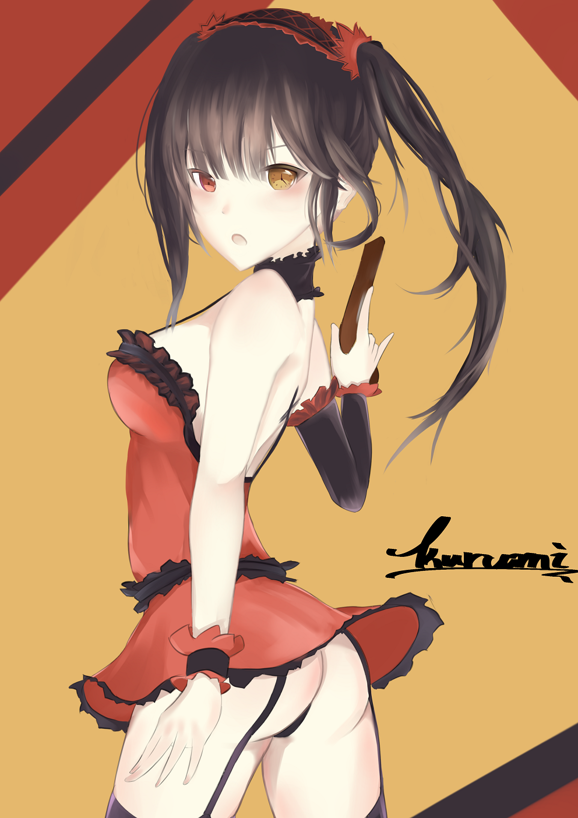

<div id="article_content" class="text-paragraph article_container">補圖<div><br></div><div>嘗試利用淡色去畫一張圖</div><div>刻意求去學Lpip大的畫風</div><div>很多效果都是誤打誤撞，不知道還畫不畫得出來</div><div><br></div><div><br></div><div><br></div><div><br></div><div>其實這張就是典型的虎頭蛇尾</div><div>那顆頭拖了太多的時間╮(╯_╰)╭</div><div>就當作塗鴉處理(喂</div><div><br></div><div>如果有時間的話，我還是會畫更多狂三的!</div><div><br></div><div><br></div><div>喜歡還請追蹤專頁:<a href="https://www.facebook.com/Bushyeyebrowscat/" target="_blank">帽捲</a></div><div>或是訂閱小屋</div><div>當然你想打個賞我也不是不歡迎啦XD</div><script>
$('article.c-text img').load(function () {
// 表格內圖片大於表格寬時，設為 100%
if ($(this).parents('table').length != 0) {
if ($(this).width() >= $(this).parents('td').width()) {
$(this).width('100%');
} else {
$(this).width($(this).width() + 'px');
}
}
});
</script></div>